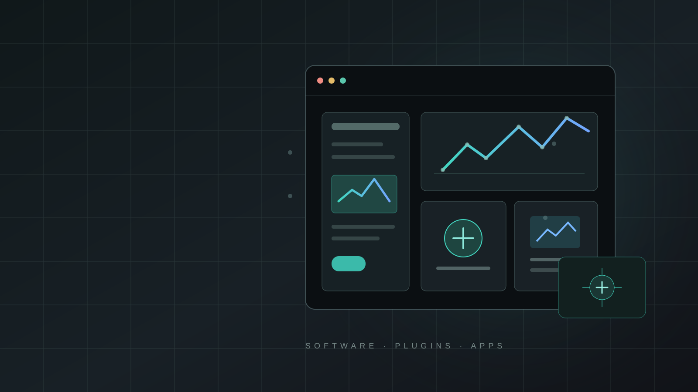

DIGITAL TOOLS · SOFTWARE · PLUGINS · APPS
Digital Tools
A growing collection of software, plugins and apps developed to support creative workflows—from the first idea through visualization and delivery.

CREATIVE TECHNOLOGY
This collection brings digital work into the portfolio alongside spatial design, exhibitions and water-feature projects. Each tool can be presented with its purpose, role, key features and the workflow it supports.